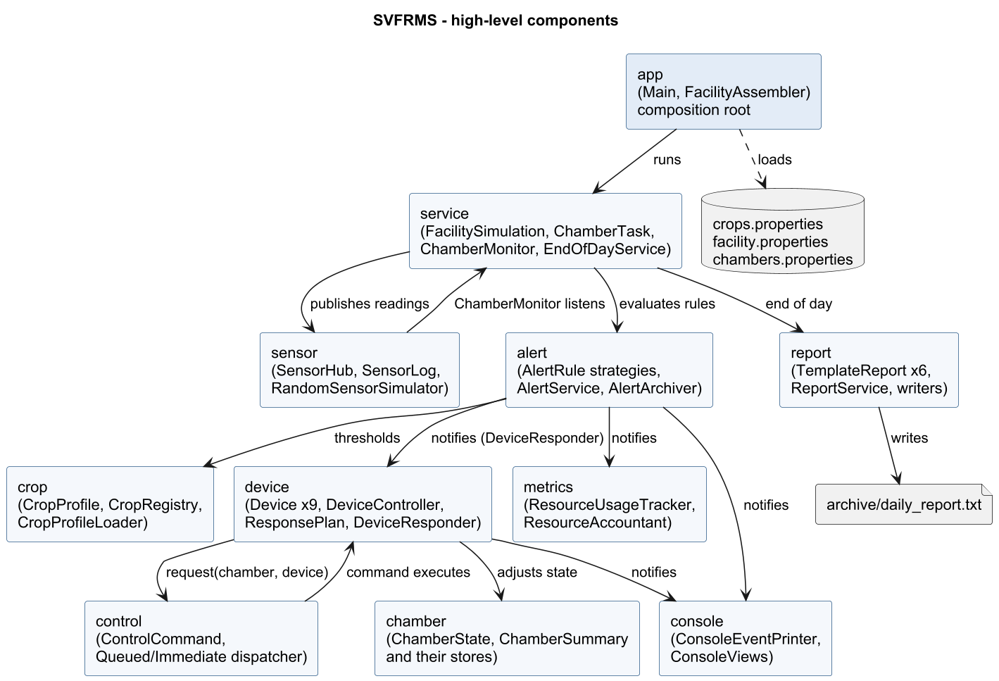
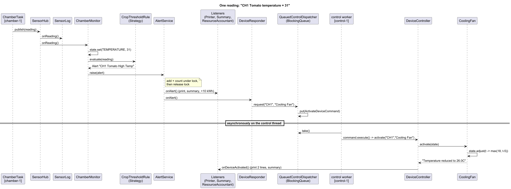
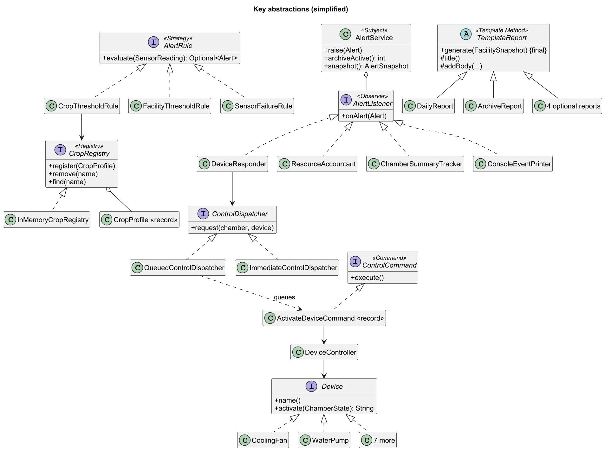

| Group Number | [ Group __ ] |
|---|---|
| Team Member 1 | [ Name ] |
| Team Member 2 | [ Name ] |
| Team Member 3 | [ Name ] |
SVFRMS monitors a vertical farm. Each growing chamber holds one crop. The program simulates sensor readings (temperature,
humidity, soil moisture, light, nutrient), compares them with the crop's acceptable ranges, raises alerts, switches on devices
(cooling fan, water pump, ...) to correct the conditions, keeps water/energy totals, and at the end archives the alerts and writes a
daily report to archive/daily_report.txt.
The whole system was one 393-line class, SVFRMS.java. Its main components were all static members of that class:
| Component (legacy) | What it did |
|---|---|
ChamberThread ×4 | 20 cycles of random readings per chamber (CH1 Tomato, CH2 Strawberry, CH3 Lettuce, CH4 Chili) |
processSensor() | per-crop thresholds, alerts, water/energy accounting, device requests, all in one method |
controlQueue + ControlThread | hand-written bounded queue (5) of "CH1|Cooling Fan" strings, consumed by activateControl() |
handleEvent() | string switch for logging, printing, alert storage and chamber summaries |
archiveAlerts(), generateDailyReport(), saveArchiveReport() | end-of-day archive, console report, file report |
Baseline first. Before changing anything we built a characterization harness that drives the untouched legacy code with a fixed seed and hand-picked boundary readings. It records the console output, the sensor log and the archive file as golden files (1,423 lines). The refactored system must reproduce them byte-for-byte, which is our evidence that behaviour was preserved.
| Issue | Evidence in legacy code | Impact |
|---|---|---|
| God class (SRP) | 15 separate responsibilities in one class: state, rules, devices, threads, formatting, file I/O, wiring | Every change risks everything |
| Crops hard-coded (OCP) | processSensor L145-204: one copy-pasted else if(crop.equals(...)) block per crop and sensor | Adding Kale means editing core logic |
| Stringly-typed code | handleEvent("CREATE_ALERT", ...), "Soil", chamber+"|"+control parsed again with split | Typos compile and silently do nothing |
| Inheritance misuse (LSP) | ControlThread extends Thread but swallows InterruptedException, so interrupt() no longer works as Thread promises | Threads cannot be cancelled |
| No abstractions (ISP/DIP) | No interfaces at all; public static mutable fields; direct System.out, new Date(), static Random | Untestable; nothing can be swapped |
| Duplication / dead code | Report header written twice (L210 and L314); irrigationCycle, showLogs, two locks never used | Formats drift; confusion |
if(crop.equals("Tomato")){
if(value>28){handleEvent("TRACK_ALERT", ...);
handleEvent("CREATE_ALERT", ...);
totalEnergyUsage+=10;
addControlRequest(chamber, "Cooling Fan");}
if(value<22){ ... totalEnergyUsage+=15;}
} else if(crop.equals("Strawberry")){ ...public static ChamberState getChamberState(String c){
if(!chamberStates.containsKey(c)){
chamberStates.put(c, new ChamberState());
}
return chamberStates.get(c);
}Four chamber threads and a control thread share every static field. Our first run of the legacy jar crashed CH1 with
NullPointerException: "state" is null at processSensor(SVFRMS.java:146), caused by the race in the snippet above.
| # | Problem | Evidence |
|---|---|---|
| C1 | Check-then-act race, unsafe HashMap | getChamberState/Summary L48-60: duplicate or null state (demo test reproduces it) |
| C2 | Lost updates on totals | totalWaterUsage += 2, totalAlerts++ unsynchronized. Demo: 80,000,000 L expected, 11,368,500 L counted |
| C3-C5 | Unsafe collections, racing read-modify-write | ArrayList alerts/logs; summary counters and chamber fields updated by two threads (L79-124) |
| C6 | False synchronization | Report reads under alertLock/reportLock, but no writer ever takes them |
| C7 | Latent lock-ordering deadlock | Nested alertLock → reportLock in two methods (L208, L223); any reversed path deadlocks |
| C8 | Swallowed interrupts → hang | catch(Exception e){} around wait() (L134, L258). If the control thread dies (it can hit C1), producers block forever on the full queue and main blocks forever on join(): a circular wait |
| C9-C10 | Racing end-of-day threads; raw thread management | "Active Alerts" changes between runs; no executor, no timeout, no shutdown path |
Our goal was to keep every feature and output format exactly as it was while fixing the structure. The key decisions:
ChamberMonitor (the new
processSensor) only records the reading and runs the alert rules.CropProfile record (ranges plus the water/energy cost of each breach) is loaded from
crops.properties into a CropRegistry. One generic CropThresholdRule replaces all the per-crop blocks.
Legacy quirks are kept as data. For example, only Tomato has a soil rule, so only Tomato has a soil.min line.AlertService notifies listeners: a console printer, a summary
tracker, a resource accountant, and a device responder. Each listener has one job."CH1|Cooling Fan". Device requests are ActivateDeviceCommand objects behind a
ControlDispatcher interface, with a threaded queue for production and an immediate version for deterministic runs.FacilityAssembler is
the single place where concrete classes are created and wired.kale.name=Kale kale.temperature.min=15 kale.temperature.max=24 kale.humidity.min=60 kale.humidity.max=80 kale.soil.min=50 kale.soil.low.water=40
return crops.find(reading.crop())
.flatMap(p -> p.threshold(reading.type()))
.flatMap(t -> check(reading, t));
// check(): isAbove(max) -> HIGH, isBelow(min) -> LOW
// message: "CH1 Tomato High Temp" (legacy text)| Principle | What we changed |
|---|---|
| SRP | Printing (ConsoleEventPrinter), file writing (FileReportWriter), report content (TemplateReports), threading (FacilitySimulation) and rules are all separate classes |
| OCP | New crop: data only. New alert type, device or report: a new class plus one line in the composition root. No existing class is edited |
| LSP | Removed extends Thread. ChamberTask is a plain Runnable run by an executor and it respects interruption. Every Device, AlertRule and ReportGenerator can be swapped for another without surprises |
| ISP | Small role interfaces: AlertRule, Device, AlertListener, DeviceListener, ReadingListener, ReportGenerator, ReportWriter, SensorSource. One class can implement two (e.g. the printer) |
| DIP | High-level code depends on interfaces (CropRegistry, ControlDispatcher, SensorSource). Clock, Random and PrintStream are injected |
| Issue | Fix | Proof (JUnit) |
|---|---|---|
| C1 | ConcurrentHashMap.computeIfAbsent (atomic check-and-insert) | 16 threads × 200 rounds: always one state |
| C2 | AtomicLong totals; alert counter guarded by the AlertService lock | 16 × 5,000 updates, exact totals |
| C3-C5 | Lock-guarded lists, ConcurrentLinkedQueue, synchronized ChamberSummary, atomic ChamberState.adjust(); immutable records cross threads | exact counts under contention |
| C6-C7 | One consistent snapshot for reports. No method ever holds two locks, and listeners run outside locks. Documented order if that ever changes: ChamberState → ChamberSummary → AlertService → ReportLog | archive ∥ raise ∥ report with 16 threads under assertTimeoutPreemptively |
| C8 | ArrayBlockingQueue(5); restore the interrupt flag; a failing command is logged and the worker continues; poison-pill drain | blocked producer stops on interrupt; legacy one does not |
| C9-C10 | Executors with named threads, Future.get timeouts, shutdownNow in finally; archive → report in a fixed order | full 8-chamber run ×5: all totals add up |
synchronized (lock) { active.add(alert); totalGenerated++; }
for (AlertListener listener : listeners) { listener.onAlert(alert); } // outside the lock, so no lock nestingVerification. 49 JUnit tests: golden regression (byte-for-byte equal to legacy output), rules, devices, reports, crop
add/remove, CLI, concurrency stress and three tests that reproduce the original legacy bugs. mvn clean package runs them all
and produces run.jar.
The diagram shows the packages and how they talk. app wires everything. Chamber tasks publish readings, the monitor
evaluates rules, and alerts fan out to listeners. Device requests go through the control queue, and reports are built from one immutable snapshot.



| Change | What you touch |
|---|---|
| Add a crop (Kale, Bell Pepper, Bok Choy, Eggplant) | Add a block to crops.properties, or pass --crops file at runtime. 0 Java files. All four were added this way |
| Remove a crop | Delete its block (or CropRegistry.remove). Chambers still get facility-wide checks |
| Grow a crop in a new chamber | Add CH5=Kale to a chambers file (--chambers) |
| Wire a device to an alert | One line in facility.properties, e.g. response.temperature.low=Heating Unit |
| New device / alert type / report | One new class implementing Device / AlertRule / TemplateReport + one line in FacilityAssembler |
| New output (dashboard, SMS) | Implement AlertListener or DeviceListener and register it |
| Real sensors instead of simulation | Implement SensorSource. Nothing else changes |
Maintainability comes from three things. Small classes have one reason to change. The golden tests fail on any accidental
output change. The deterministic --seed N --sequential mode makes bugs reproducible. Brief features missing from the legacy code
(Sensor Failure alert, alert severity, Heating/Ventilation/Shade devices, Weekly Crop, Water, Energy and Nutrient reports) are
included, but they are opt-in or only triggered by new conditions, so the default output is still identical to the legacy output.
| Pattern | Where | Problem it solves |
|---|---|---|
| Strategy | AlertRule: crop, facility, sensor-failure rules | The 65-line if/else in processSensor. Each check is now a swappable, testable class |
| Observer | SensorHub, AlertService, DeviceController and their listeners | The handleEvent string switch that coupled printing, counting and tracking. Reactions are now independent |
| Command | ControlCommand / ActivateDeviceCommand in a BlockingQueue | "CH1|Cooling Fan" strings crossing threads. Requests are typed and can be queued, and "when" is separate from "what" |
| Template Method | TemplateReport and 6 reports | The report header and totals written twice. The skeleton is fixed once |
| Registry (+ data-driven config) | CropRegistry, DeviceRegistry, ResponsePlan | Crops and device choices hard-coded. They now change without recompiling (OCP) |
| DI + Composition Root | FacilityAssembler | Global statics. Wiring lives in one place, so tests can build the system with a fixed seed |
| Producer-Consumer | QueuedControlDispatcher | Hand-written wait/notify that swallowed interrupts |
Not used, on purpose: Singleton (the global statics were the original problem), Builder (records with 4-6 fields are already clear), Abstract Factory (there is no family of products, and the registry is simpler).